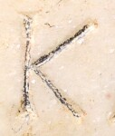

K - type1
Script
Latin
Grapheme
K
Allograph
type1
Characteristic form:
downstroke is vertical
lower-bar is diagonal
upper-bar is diagonal
Typology
Full typology of allographs
Exemplar

Inscription ISic000142
.
Origin: Thermae Himeraeae
between AD 1 and AD 300
Other examples